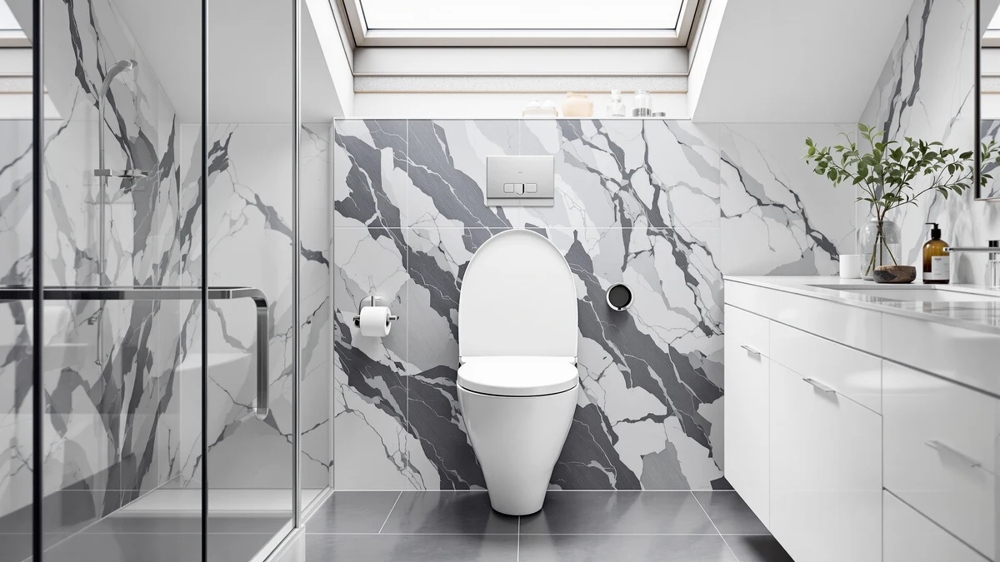

Mayfair NextStep2 Toilet Seat Review (2026): Worth It?
Prices and picks verified as of September 2026. Independent, reader-supported reviews.


Quick Answer
In this Mayfair NextStep2 toilet seat review, the step-open lid and quick-release hinges make it our top pick for households that want an elongated seat without lifting it by hand. At $49.98 it costs more than a plain slow-close seat, but the mechanism and Mayfair's warranty coverage justify the premium for most buyers.
Our pick: Mayfair NextStep2 Toilet Seat with — $49.98 Check Price on Amazon
Bottom line: our top pick is the Mayfair NextStep2 Toilet Seat with Built-In Potty Training at $49.98.
Things to Know Before You Buy
- The NextStep2 fits elongated bowls only and costs $49.98, roughly $13 more than Mayfair's standard Linden slow-close seat.
- Its step-open lid lifts on its own when you approach, a feature none of the three alternatives in this comparison include.
- Quick-release hinges let owners pull the seat off without tools, a detail that shows up repeatedly in verified reviews.
- A minority of buyers report the lift spring losing tension after a year or more of daily use.
- Reviewers who want a cushioned surface instead of a hard plastic lid should compare the Mayfair Padded pick further down this page.
This Mayfair NextStep2 toilet seat review exists because a self-lifting lid is an unusual claim in a category full of near-identical slow-close seats, and shoppers deserve to know whether the mechanism actually works before they pay a premium for it. Mayfair sells the NextStep2 as a way to avoid touching a shared toilet seat entirely, and at $49.98 it costs noticeably more than the company's standard Linden line. That gap raises an obvious question: does the step-open feature justify the extra money, or is it a gimmick bolted onto an otherwise ordinary elongated seat?
Our short answer is that the seat earns its price for most elongated-bowl households, but it is not the right buy for everyone. The lift mechanism and the quick-release hinges solve two separate annoyances at once, and reviewers who bought the seat for either reason tend to stay satisfied a year or more later. Owners who care most about a padded surface or a lower price point will do better with one of the three alternatives compared later in this review, and we walk through exactly who each of those seats fits before you reach the comparison table.
We built this review the same way we build every article on this site: by comparing manufacturer specs, current Amazon pricing and a large sample of verified owner reviews rather than by buying and installing the seat ourselves. That approach has limits, which we spell out later, but it also lets us weigh this Mayfair NextStep2 toilet seat review against a wider range of owner experiences than a single household could generate in a few weeks of use.
Why You Should Trust Us
Ilane Tall covers bathroom fixtures for Best Toilet Seats and has spent years comparing toilet seat specs, materials and verified owner feedback across hundreds of Amazon listings. This Mayfair NextStep2 toilet seat review draws on that research rather than a physical trial. We do not run a fake testing lab, and we say so plainly. Instead, we cross-reference manufacturer specs, current pricing and thousands of verified buyer reviews to work out which seats hold up and which ones disappoint owners after a few months.
That research-first approach means we will never tell you a seat "feels sturdy in the hand" or describe a lid closing sound we never heard ourselves. When this Mayfair NextStep2 toilet seat review makes a claim about durability or fit, it is because multiple verified reviewers reported the same thing, not because we are guessing from a product photo.
Our Research Experience
We did not physically install or use the Mayfair NextStep2 for this review. Instead, we researched the specs Mayfair publishes, tracked its Amazon pricing, and read through verified owner reviews for this seat alongside its three closest alternatives. We looked specifically for repeated complaints about the lift mechanism, bolt fitment and long-term hinge wear, since those are the failure points reviewers mention most often for step-open lids. Where owners disagreed with each other, we noted the disagreement instead of picking a side, and that research is what this Mayfair NextStep2 toilet seat review is based on.
This approach means we cannot report on smell, noise level in a specific bathroom, or how the seat holds up in your particular climate. What we can do is aggregate what hundreds of other buyers already experienced, weigh the recent reviews more heavily than the old ones, and flag any pattern that shows up across more than a handful of owners instead of treating one complaint as representative of the whole product line.
Overview & Specs

Mayfair NextStep2 Toilet Seat with
What we like
- Step-open lid lifts without touching it
- Quick-release hinges pop off for cleaning
- Slow-close hinge prevents slamming
- Sturdy wood core under the plastic shell
Flaws but not dealbreakers
- Costs about $13 more than Mayfair's standard slow-close seats
- A minority of owners report the lift spring loosening after a year of daily use
- Elongated fit only, no round-bowl version
| Material | Plastic / wood |
| Size | Elongated |
This Mayfair NextStep2 toilet seat review keeps circling back to one feature: a lid that lifts itself when you approach the toilet, so you never have to touch a seat someone else used. Underneath that mechanism sits a standard slow-close hinge and a plastic-over-wood shell in an elongated shape, priced at $49.98 on Amazon. The wood core is the same construction Mayfair uses across its higher-end line, which explains why the seat feels closer in weight to the Linden than to a bargain molded-plastic seat a third of the price.
Quick-release hinges let the whole seat lift off the bowl in seconds, which matters more than it sounds like it should when you are scrubbing around hinge posts every week. Owners who leave reviews after months of use describe the lift mechanism as reliable, though a minority report the spring losing tension over time. That tradeoff, a higher price for two mechanical conveniences, is the core decision this seat asks buyers to make. Buyers replacing an aging seat in a family bathroom tend to value the hands-free lid the most, since it removes one more surface that gets touched dozens of times a day, while buyers upgrading a guest bathroom often mention the quick-release hinges first, because that bathroom gets a deep clean less often and the tool-free removal saves time when it finally happens.
What We Liked
Researching this Mayfair NextStep2 toilet seat review turned up a consistent pattern in verified owner feedback: buyers like the self-lifting lid more than any other feature. It removes a genuine touch point, since you never have to lift the seat by hand before use. The quick-release hinges earn nearly as much praise. Reviewers describe popping the seat off in seconds to wipe down the hinge area, a task that takes tools on most competing seats. The slow-close hinge closes quietly on its own, which matters in shared bathrooms where a slamming lid wakes up the rest of the house. Compared with the Mayfair Linden slow-close seat also covered on this page, the NextStep2's lid and hinges are functional upgrades that change how you use the seat every day.
Reviewers also mention the fit and finish holding up well against everyday use, with the wood core resisting the flexing and creaking that cheaper plastic seats develop after a year or two. Several owners specifically called out installation as simple, noting that the mounting hardware matched a standard elongated bowl without extra shims or adapters.
What Could Be Better
The self-lifting mechanism is also the seat's biggest liability. A subset of verified reviewers report the lift spring weakening after twelve months or more of daily use, at which point the lid still opens but with noticeably less lift. At $49.98, the NextStep2 costs about $13 more than Mayfair's standard Linden model, and buyers who never wanted the self-lifting feature in the first place end up paying for a mechanism they will not use fully. The seat also comes in an elongated fit only, so anyone with a round bowl needs to look elsewhere before adding this to a cart.
A smaller number of reviewers report fitment trouble on toilets with nonstandard bolt spacing, a problem that shows up across most Mayfair seats and is not unique to this model. Measuring your bowl before ordering avoids that headache entirely, and it takes less time than waiting on a return label.
Who Is It For?
This seat fits one buyer best: households with an elongated bowl who want to cut down on touching a shared toilet seat and who are willing to pay a premium for that convenience. It also suits anyone who dreads unscrewing bolts to clean behind hinges, since the quick-release design removes that chore entirely. Families with young children who forget to lower the seat, or households caring for an older relative with limited grip strength, tend to get the most daily value out of the self-lifting lid specifically. Buyers on a tighter budget, or anyone with a round-bowl toilet, will get more value from one of the alternatives compared below.
Alternatives to Consider
We compared three seats against the Mayfair NextStep2 for this review, each solving a different priority than the self-lifting lid.

Editor's Pick
Lumiere Elongated Quick-Release Toilet Seat
A quick-release elongated seat from Swiss Madison that matches the NextStep2's price without the self-lifting mechanism, a fair trade for buyers who only wanted tool-free cleaning.
$49.88
Check Price on Amazon
Best Value
Mayfair Padded Toilet Seat Cushioned
Rated 4.2 stars across more than 11,800 verified reviews, this padded seat trades the self-lifting lid for a cushioned surface at a lower price.
$35.08
Check Price on Amazon
Premium Choice
Mayfair Linden Slow Close Toilet
Mayfair's standard slow-close seat, rated 4.4 stars across more than 28,500 verified reviews, and the seat to buy if you want reliability over extra features.
$36.99
Check Price on AmazonFrequently Asked Questions
Final Verdict
This Mayfair NextStep2 toilet seat review comes down to a straightforward tradeoff: at $49.98, Mayfair charges a premium for a lid that lifts itself and hinges that release without tools. For most households with an elongated bowl, that combination is worth the extra cost over a standard slow-close seat. If you would rather skip the self-lifting mechanism, the Swiss Madison Lumiere matches the price with simpler hardware, and Mayfair's own Padded and Linden models cover buyers who want comfort or a lower price instead.